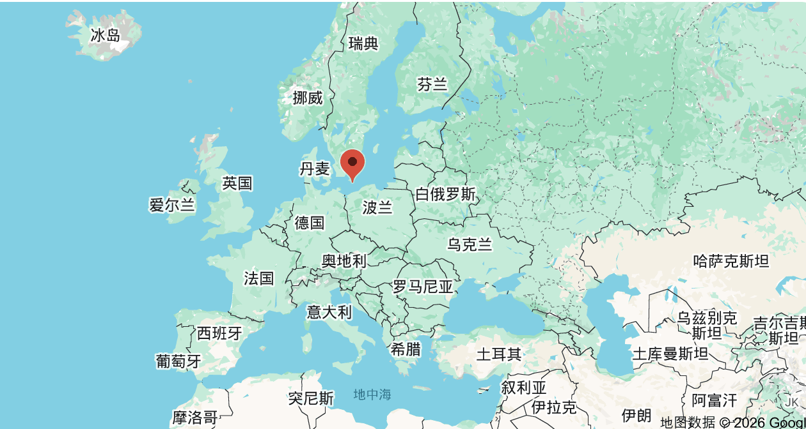
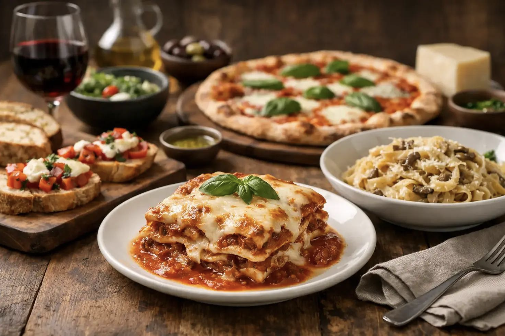
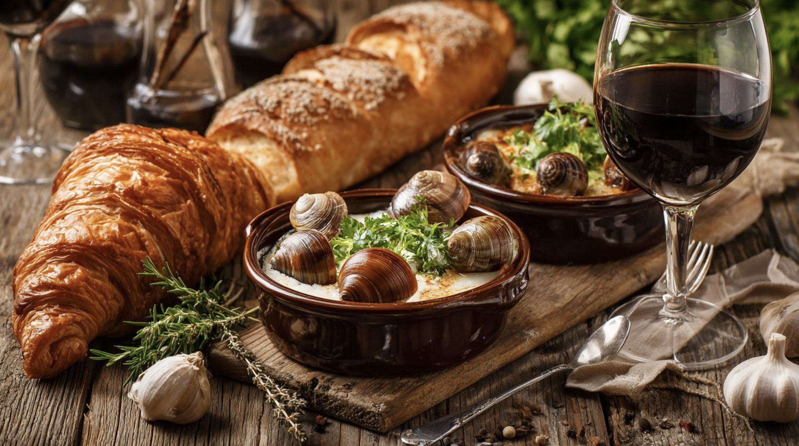
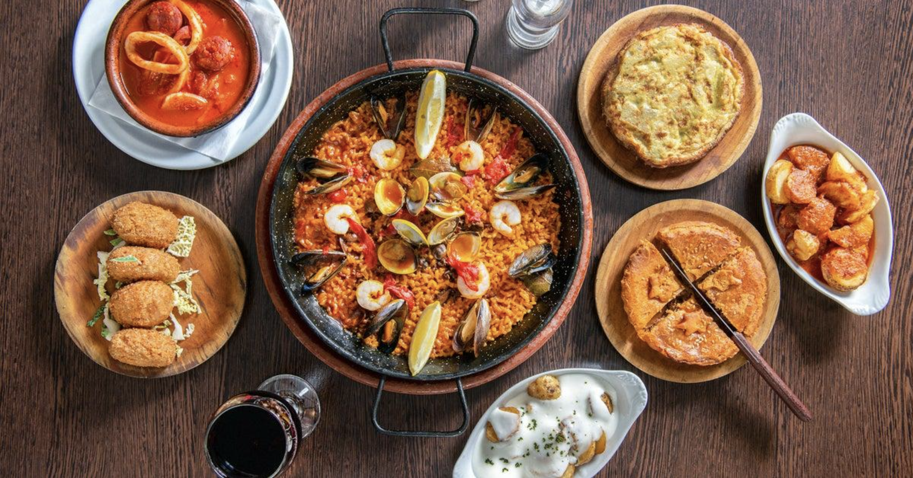

European food is rich in variety and reflects the history, geography, climate, and traditions of different countries. Each country has its own special ingredients, cooking methods, and food culture.


Popular foodsPizza, Pasta, Lasagna, and Risotto.
Italian people enjoy eating with family and friends. Meals are an important part of social life.Italian food often uses tomatoes, olive oil, cheese, and fresh herbs.

Popular foods Croissants, Baguettes, Cheese, and French Onion Soup.
French people value food quality, dining experiences, and presentation.French cuisine is famous for its cooking techniques, sauces, butter, and cheese.

Popular foods Paella, Tapas, and Spanish Omelette.
Spanish people enjoy sharing small dishes with family and friends.Spanish food often uses olive oil, seafood, rice, and spices.
Southern Europe: Olive oil, seafood, vegetables, and fresh fruits are common.
Northern Europe: Potatoes, meat, fish, and dairy products are popular.
Western Europe: Bread, cheese, meat, and pastries are widely enjoyed.
Italy: Traditional pasta and pizza have a long history.
France: French cooking has influenced many countries.
Spain: Tapas is an important food-sharing tradition.
Italy: Families often enjoy long meals together.
Spain: People enjoy sharing small dishes.
Greece: Eating together is an important social activity.